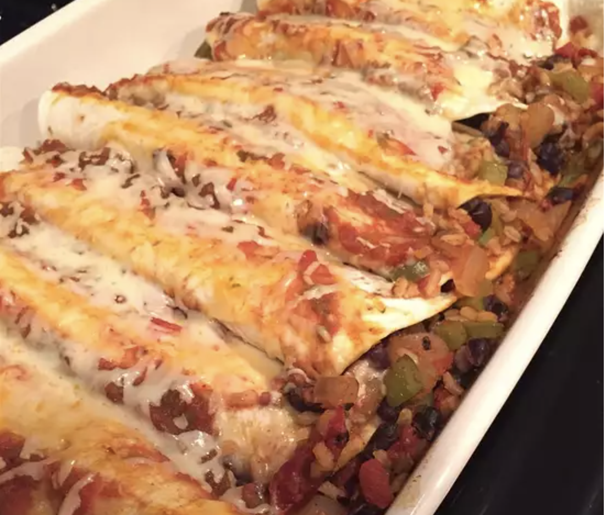

Enchilada Recipes

Description:
A DELIGHT for your mouth and stomach
A staple of a happy diet!
Ingredients:
- 1 tablespoon olive oil
- 1 green bell pepper, chopped
- 1 onion, chopped
- 3 cloves garlic, minced
- 1 (15 ounce) can black beans, rinsed and drained
- 1 (14.5 ounce) can diced tomatoes and green chilies
- ¼ cup picante sauce
- 1 tablespoon chili powder
- 1 teaspoon ground cumin
- ¼ teaspoon red pepper flakes
- 2 cups cooked brown rice
- 8 (6 inch) flour tortillas, warmed
- 1 cup salsa
- 1 cup shredded Cheddar cheese
- 3 tablespoons chopped fresh cilantro leaves
- ¼ cup shredded Cheddar cheese
Directions:
- Preheat oven to 350 degrees F (175 degrees C). Lightly grease a 9x13-inch baking dish.
- Heat oil in a large skillet over medium heat; cook and stir green pepper, onion, and garlic until tender, about 7 minutes. Stir in beans, tomatoes, picante sauce, chili powder, cumin, and red pepper flakes; bring to a boil. Reduce heat to low and simmer, uncovered, until heated through and mixture thickens, about 5 minutes. Fold in rice and 1 cup Cheddar cheese; cook until heated through, about 5 minutes.
- Spoon a rounded 1/2 cup bean mixture down the center of each tortilla. Fold sides over filling and roll up. Place enchiladas seam side down in baking dish; spoon salsa over each tortilla. Cover baking dish with aluminum foil.
- Bake in preheated oven for 25 minutes. Uncover and sprinkle with cilantro and 1/4 cup Cheddar cheese. Bake until cheese is melted, 2 to 3 minutes.